Previous Page Back to Start Page
(49) Modifying process simulators for GEM surface complexation modelling
Once the
process simulator has been created (this required some work), it can be
easily "cloned" and modified. On this page, we will
perform some typical cases aimed at different presentation of results
or sensitivity studies of GEM SCMs.
It is often instructive to plot the modelled titration curves in the surface density scale. Besides, once the inversion titration sequence has been calculated (see previous page) and the titrant additions recorded in the modC vector, a "cloned" Process record can be re-configured for a much faster calculation using a simple "direct titration" scheme.
To do such a
modification, start GEM-Selektor, open the "SorptionUL" project, open
the "Project" window and get there the previously created Process
record (if this record was not loaded already).
Now, execute
the "Record" "New(Clone)..." menu command. In the appearing list of
SysEq record keys, select the one for "parent" system ("SorptionUL:G:UL_on_Qtz:1:0:1:25:0:")
and press "Ok" to proceed. In the appearing dialog for the new Process
record key, click on the "From List" button and then "Ok" to get the
existing record key and modify the last field from "G" to "S" and the
preceding field by adding "d" (to add a hint that this will be a direct
titration process), as shown below.
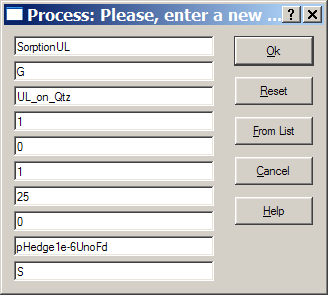
When ready,
click "Ok" to continue. In the appearing Process setup wizard, switch
to the "S" (sequential) mode, as shown below:
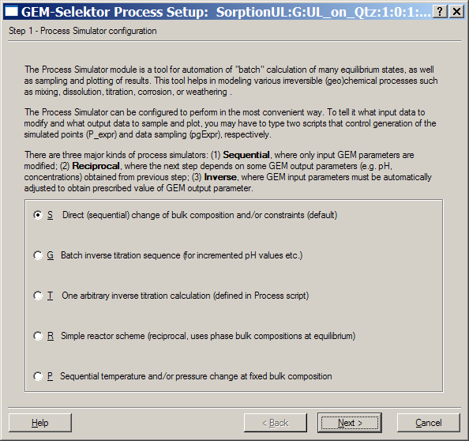
When done,
click "Next >" three times to get through the rest of wizard back to
the "Process" window. On Page 1, edit
the two comment lines, the script, and clean the iterators, as
shown below. As
the additions of titrants are now known (you can see them in the modC
vector on the right side), the script can be greatly simplified and the
"golden section" algorithm is no more needed.
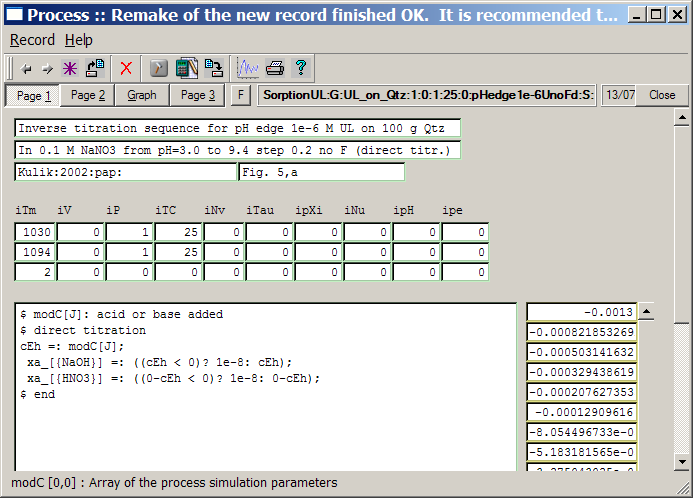
To see the
difference in performance, we postpone the modification of the second
script and run the direct titration right now. First, switch to the
"Graph" page. The xp and yp
arrays can be efficiently cleaned off to zeros with help of the
built-in calculator (just right-mouse click on the first cell in the
array, choose "Select object" and then again right-click on the same
cell and choose"Edit" and then "Clear").
Now, click on the "Calculate" tollbar button; click
"Yes" to save the changed Process record; and also click "Yes" on a
question "Use graphic window?". You should see next the GEMS Graphics
dialog with modeled pH edges appearing as more and more disconnected
dots (at least 10 times faster than in the inverse titration
calculations). When the calculation is finished, the Graph dialog will
look like this:
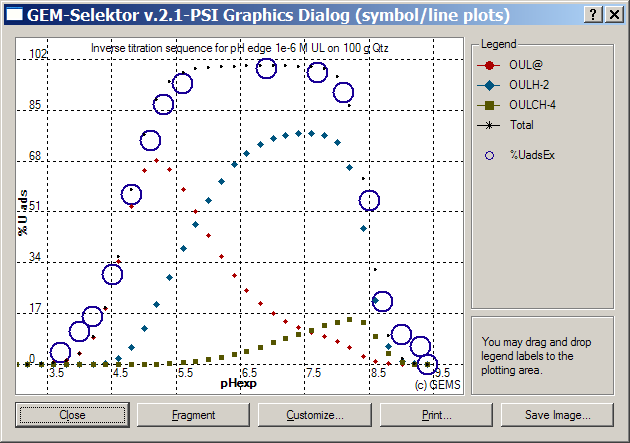
Close this
dialog and open it again (using the "Plot data" toolbar button) to see
a usual, customizable line-symbol plot.
Now, switch
to Page
2 of the "Process" window. There, the math script must be modified so
that
the pH adsorption edges will be shown in the surface density scale (in
nm-2).
Simply un-comment the second operator (by removing two '$' characters)
and
comment out the third operator so that it looks like "$ cXi =:
b[{U}]/100;"
. When done with editing, switch to Page 3 where we have to
re-scale the experimental data which we have previously typed into the yEp column.
Rescaling coefficient can be obtained from the following
considerations. The previous factor cXi (for expressing the
calculated amounts of surface species as percentage of total uranium
adsorbed) was simply this total amount divided by 100, i.e. 1e-6 / 100
= 1e-8. The new factor (to express in the nm-2 density scale) is a
product of the sorbent mass (100 g), the specific surface area (0.33 m2/g),
and the units conversion factor from moles per m2 to molecules per nm2
(1.66054e-6). So, the new cXi equals 5.48e-5. Therefore, the
scaling factor for experimental data is cXi(old)/cXi(new) =
1e-8/5.48e-5 = 1.825e-4. Now you can use the built-in calculator (F8)
for multiplying all numbers in the yEp column by this factor
(1.825e-4).
Now, start
calculation of the process
simulator
again; when finished, change the Py_Nam field to
"Uads,nm-2", open the Graph dialog, and customize the plot by
changing
the Y axis interval to (0; 0.024). You should arrive at a plot similar
to
that shown here:
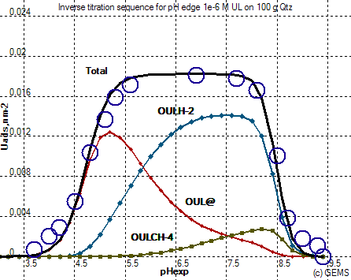
From this
graph, where the pH adsorption edges are shown in surface density
scale, it is clear that at 1e-6 M total uranyl in the system, the
adsorbed densities of its
surface species on 100 g crushed quartz are still small (less than 2
molecules
per 100 nm2). At such densities (much below 0.14 nm-2
- the density of uranyl-specific sites set in the GEM SCM), the SACT
corrections
are almost negligible, so no competition occurs between the adsorbed
uranyl complexes. .
(50)
Cloning a Process record to model a new system
An existing
Process record can also be "cloned" and used in modelling another
system, in which case, a new "parent" SysEq record has to be created
and calculated first.
Let us
explore
how this works on two examples: one that demonstrates the impact of
addition
of a uranyl complexing ligand (0.0001 M NaF) to the system containing
100
g/L crushed quartz and 1e-6 M uranyl; and another that has instead 1e-5
M
of uranyl without addition of NaF.
In the
"Process" window, use the "Record" "DIsplay" menu command (or the
"Display selected record" toolbar button) to get the previously
created "SorptionUL:G:UL_on_Qtz:1:0:1:25:0:pHedge1e-6UnoF:G:". This will automatically load its
parent SysEq record "SorptionUL:G:UL_on_Qtz:1:0:1:25:0:" which we can use for "cloning" a
new parent SysEq record and, after that, for "cloning" a new Process
record.
Open the "Single
Thermodynamic System" dialog (by clicking on the "Single-System
Equilibria" button on
the "Modelling Project" dialog) and execute the "Record"
"New(Clone)..."
menu command. In the appearing dialog, change the new record key to "SorptionUL:G:UL_on_Qtz_F:6:0:1:25:0:" and click "Ok" to proceed.
In
the appearing "System" window, switch to the "IComp" page and change
there
the additions of F and Na to 1e-4 mol, as shown below.
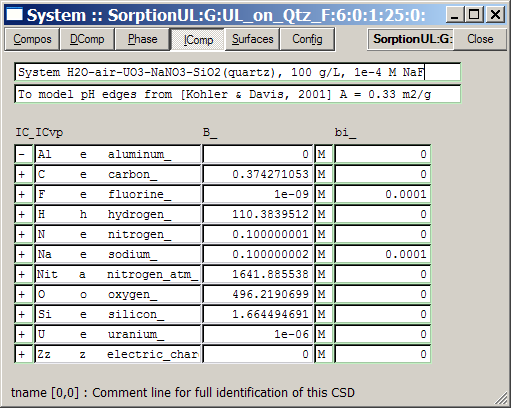
Change also the
comment lines accordingly, close the "System" window, calculate the
equilibrium
(using the "GEM calculate" toolbar button) and accept the result to
save the new "parent" record to database. Now, you can close the
"Single Thermodynamic System" dialog
and switch to the "Process" window.
In the "Process"
window (where the "SorptionUL:G:UL_on_Qtz:1:0:1:25:0:pHedge1e-6UnoF:G:" record has already been loaded), execute the "Record"
"New(Clone)..." menu command. In the appearing list, select the SysEq
record "SorptionUL:G:UL_on_Qtz_F:6:0:1:25:0:" that we just have created, as a
"parent" system for the new process simulator, and press "Ok". In the
appearing "Process: Please, enter a new record key" dialog, change the new record key
to
"SorptionUL:G:UL_on_Qtz_F:6:0:1:25:0:pHedge1e-6U+F:G:" and click "Ok" to
proceed. Now, the Process Setup wizard appears on your desktop.
Click on the "Next >" button to proceed to the "Step 2" page:
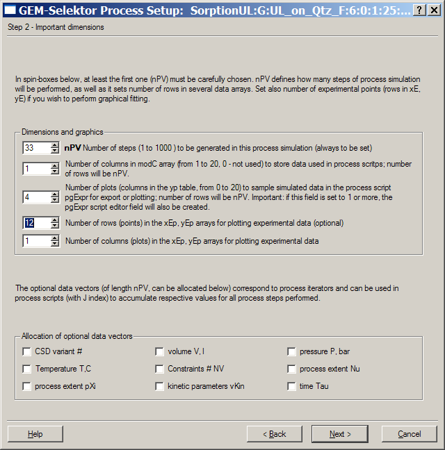
For this
system, 12 experimental points are available and can be shown over the
modelled
pH edges. Hence, change the number of points of input empirical data to
12 as shown above, and click "Next >" until leaving the wizard and
getting back to Page 1 of the Process window. There, fix the comment
lines by noting the presence of 1e-4 M NaF in the system, and switch to
the "Graph" page. Enter there the following experimental data into
the xEp and yEp columns:
pHexpr . %Uads(expr)
3.7 0
4.05 0
4.35 4
4.85 23
4.95 31
5.15 48
5.35 67
5.65 88
5.9 95
6.05 97
6.1 97
6.35 99
After entering the data, click on the "Plot data" 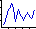 toolbar button to see the old modeled lines with just entered experimental points. Confirm saving changes in the Process record. The plot now suggests that the modelled pH adsorption edge of uranyl in presence of fluorine must shift to higher pH values. Close the graph dialog, switch to Page 1 of the Process window, increase the maximum titration interval in the ipXi iterator to { -0.0015; +0.06 }, and click on the "Calculate record data" toolbar button to run the process simulator (answer "Yes" to the appearing question "Use graphic window?").
The slow inverse titration
sequence calculation begins; you should see the Graph dialog where
newly-computed
modelling points appear one-by-one as points over the old plot lines.
When
the simulation run is finished Ok, close the Graph dialog and open it
again
(confirm saving the Process record to database). Now, the modeled pH
edge
fits nicely to the experimental points. After some customization, the
plot
should look like this:
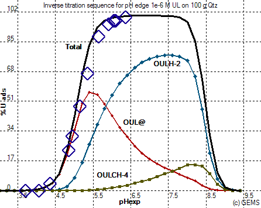
The plot shows that the fluorine complexation of uranyl in aqueous
solution
significantly out-competes formation of the neutral surface complex of
uranyl on quartz, but only below pH 5.5; above that, the addition of
1e-4 M NaF causes no
visible effect on uranyl adsorption. Compare the above plot with Fig.
1,a in
[Kulik,
2002] paper where the same effect has been modelled using a
non-electrostatic adsorption model (NEM).
As a next exercise,
we can investigate the impact of increasing total uranyl loading on pH
adsorption
edges on crushed quartz (without NaF addition), following Figs. 5,c and
6,b
of [Kulik,2002]. In the "Process"
window,
use the "Display selected record" toolbar button to get the "SorptionUL:G:UL_on_Qtz:1:0:1:25:0:pHedge1e-6UnoF:G:" Process record, which will
automatically
load also its parent SysEq record "SorptionUL:G:UL_on_Qtz:1:0:1:25:0:". "Clone" the latter (as described
above)
under a new key "SorptionUL:G:UL_on_Qtz:5:0:1:25:0:". In the "Compos" page of "System"
window,
change the addition of "UO3" from 1e-6 to 1e-5 moles, then
calculate
and save the new SysEq record (by clicking on the "Accept" button on
the
Progress dialog). Close the "Single Thermodynamic System" dialog and
the
"System" window and switch back to the "Process" window.
In the "Process" window, execute the "Record"
"New(Clone)..." menu command. In the appearing list, select the SysEq
record "SorptionUL:G:UL_on_Qtz:5:0:1:25:0:" which we just have created as a
"parent" system for the new process simulator, and click "Ok". In the
appearing "Process: Please, enter a new record key" dialog, change the record key to "SorptionUL:G:UL_on_Qtz_F:5:0:1:25:0:pHedge1e-5UnoF:G:" and click "Ok" to
proceed. Next, the Process Setup wizard appears; go on its second
page (Stage 2) and
change there
the number of plot lines (columns in the yp table)
from
4 to 5, the number of empirical points from 16 to 10, and click "Next
>" until getting back to the Process window.
On Page 1 of
the
"Process" window, change the iTm iterator values
from
1030 to 5030 and from 1094 to 5094 (otherwise this process simulator
will
erase previous calculations for 1e-6 M uranyl loading). Switch to
Page
2 where the data sampling math script needs to be extended in order to
display
the "Sio>>OUL2H+" binuclear surface complex
that
was totally insignificant at low uranium loadings. Mark and copy (Ctrl-C)
the operator "yp[J][2] =: .... " and paste it (Ctrl-V)
before the last operator "yp[J][3] =: ...", then
edit
the last two operators as follows:
.........
yp[J][3] =: x[{Sio>>OUL2H+}]*2/cXi;
yp[J][4] =: yp[J][0]+yp[J][1]+yp[J][2]+yp[J][3];
When
finished,
switch to the "Graph" page and edit the pLnam[0,3]
and
pLnam[0,4] legend cells accordingly; then find xEp
and yEp vectors and type in there the following
experimental
data:
pHexpr . %Uads(expr)
3.56 2.5
4.12 7.5
4.3 16
4.5 25
4.55 32
4.8 42.5
5.15 60
5.3 74
5.53 80
6.0 91
When
finished,
run the process simulator (confirm saving the record to database);
afterwards,
show and customize the plot that should finally look like this:
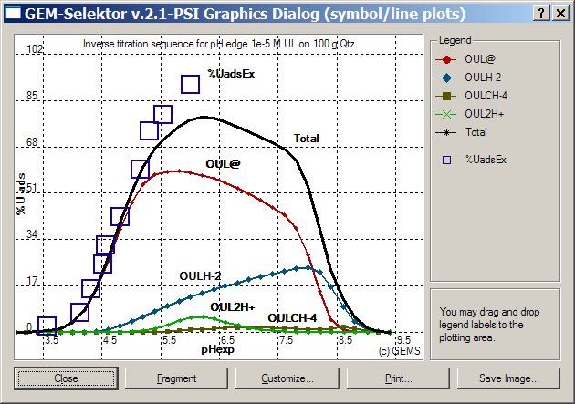
Note that, at
higher
uranyl loading, the "Sio>>OUL@" surface
complex
becomes more significant, and the ternary uranyl-carbonate "Sio>>OULCH-4" surface complex -
almost unimportant. However, comparison with Fig. 5,c in [Kulik,2002]
shows that the adsorption of uranium is somewhat under-predicted at pH
> 5.0. The reason lies in the competition of two species OUL@ and
OULH-2 for the same kind of sites with 0.14 nm-2 site
density. In the paper, no competition was assumed, i.e. these species
were modeled as binding to different sites each of 0.14 nm-2
density (i.e., both sites together have 0.28 nm-2
density).
Let us first
test the model variant with two separate sites for the OUL@ and
OULH-2 surface species. Open the "Single Thermodynamic
System" dialog and get there the
current
SysEq record "SorptionUL:G:UL_on_Qtz:5:0:1:25:0:".
Open the "System" window and select there the "Surfaces" page. On that
page, find the SATC_[3][4] cell (against the "Sio>>OULH-2" species) and change there the
site type index from 1 to 2, in order to consider this uranyl surface
species as having its own site. Re-calculate the equilibrium and save
it into the database, then close the "Single Thermodynamic System"
dialog, get back to the Process window, and start re-calculating the
titration process. When finished, you should obtain the plot
shown below:
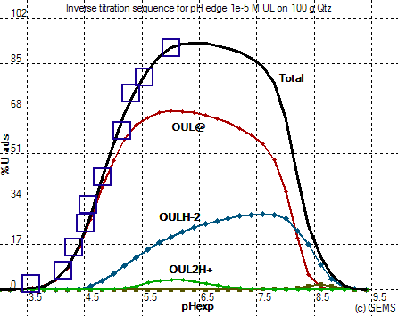
The fit to experimental data is now fine, almost identical to that on Fig. 5,c in
[Kulik,2002]. Note that no parameters have been changed in the surface
complexation model except the allocation of two surface species to two
separate sites (to remove competition). This is a good demonstration of
the power and flexibility of GEM SCM approach based on SATC terms that
replace the site balance constraints. A good fit could obviously be
obtained by restoring the competition between the OUL@ and OULH-2
surface species on the same site type, but of higher site density. Try
0.18 nm-2 as an exercise - you should see the following
diagram:
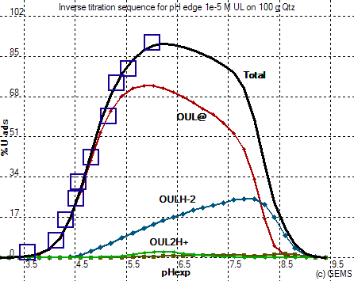
Note that the calculated
speciation of uranyl on surface is now different from the
"non-competitive" case, although the total curve for adsorbed uranium
is not so different.
The last exercise on this
page
will be a calculation of pH adsorption edges at the highest uranium
loading
0.0001 M. Open the "Single Thermodynamic System" dialog and "clone" the
current
SysEq record "SorptionUL:G:UL_on_Qtz:5:0:1:25:0:" into a new "parent" record "SorptionUL:G:UL_on_Qtz:4:0:1:25:0:". In the "Compos" page of "System"
window,
change the addition of "UO3" from 1e-5 to 1e-4 moles, then
calculate
and save the new SysEq record (by clicking on the "Accept" button on
the
Progress dialog). Close the "Single Thermodynamic System" dialog and
the
"System" window and switch back to the "Process" window.
In the "Process" window,
"clone"
the current record "SorptionUL:G:UL_on_Qtz_F:5:0:1:25:0:pHedge1e-5UnoF:G:". In the appearing list, select
the
SysEq record "SorptionUL:G:UL_on_Qtz:4:0:1:25:0:" as a "parent" system for the new
process
simulator, and press "Ok". In the appearing "Process: Please, enter a
new
record key" dialog,
change
the record key to "SorptionUL:G:UL_on_Qtz_F:4:0:1:25:0:pHedge1e-4UnoF:G:" and click "Ok". In the Process Remake
dialog,
change there the number of empirical points from 10 to 9, edit the
comment
lines, and click "Ok" to proceed. On Page 1 of the "Process" window,
change
values in the iTm iterator to 4030 and 4094, the
ipXi titration interval to { -0.0016; 0.06 }, then
switch
to the "Graph" page and enter the following experimental data into xEp
and yEp columns:
pHexpr . %Uads(expr)
4.3 5
4.55 13
4.7 14
5.2 25
5.45 22
5.75 24
5.85 31
6.05 33
6.45 30
When done,
run
the process simulator with the graphic window. When this (somewhat
slow)
calculation is finished, plot the results on Graphic Dialog. After some
customization,
you will see that the experimental data are ca. 30% underpredicted at
pH between 5 and 7 (not shown here). This is obviously the same effect
of competition between two uranyl surface complexes for the same site
(0.14 nm-2 density) that we already observed at 1e-5 M total
uranium loading. Let us first try to increase the site density up to,
say, 0.36 nm-2. Open the "Single Thermodynamic
System" dialog and get there the
current
SysEq record "SorptionUL:G:UL_on_Qtz:4:0:1:25:0:".
Open the "System" window and select there the "Surfaces" page, where
change both densities for the site 1 from 0.18 to 0.36 nm-2.
Then recalculate the equilibrium, save it to database, close the System
window and the "Single Thermodynamic System" dialog, and re-run the
process simulator. When finished, plot the results and you will see
something like this:
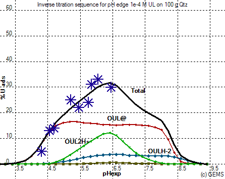
The fit is good, but the shape and the speciation are different from
what is shown on Fig. 6,a in
[Kulik, 2002]. The reason is again that in the paper, the species OUL@
and OULH-2 were not assumed as competing for the same kind of sites.
Instead, each of these surface complexes was assumed as occupying its
own sites at maximum density of 0.14 nm-2. Let us try how
this model should work. Again, open the "Single Thermodynamic
System" dialog and get there the
current
SysEq record "SorptionUL:G:UL_on_Qtz:4:0:1:25:0:".
Open the "System" window and select there the "Surfaces" page, where
change both densities back from 0.35 to 0.14 nm-2, and the
site index for the Sio>>OULH-2 species from 1 to 2. Then
recalculate the equilibrium, save it to database, close the System
window and the "Single Thermodynamic System" dialog, and re-run the
process simulator. Finally, you should obtain the graph like shown
below.
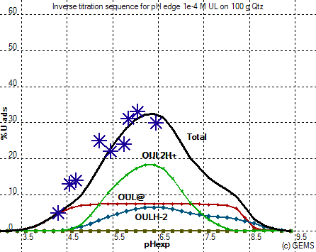
The plot above is pretty much
the same as that on Fig. 6,a in [Kulik, 2002] paper, or Fig. 6,b
re-plotted
in the surface density scale. An essential feature of this calculation
is
that the individual SACT corrections due to the maximum density 0.14 nm-2
to the "Sio>>OUL@"
and "Sio>>OULH-2" surface complexes are now
strong and important. Without these SACT
corrections,
the model would overpredict adsorption of uranyl 10 or more times at pH
between
5 and 8.
Different
shapes
of the two curves for OUL@ and OULH-2 on the above graph are due to the
fact that the "Sio>>OUL@"
species is neutral and it suffers only from the SACT non-ideality
correction,
whereas the inner-sphere "Sio>>OULH-2"
surface
species concentration "feels" simultaneously SAcT and Coulombic
corrections,
the latter due to development of negative surface charge on quartz
surface
with increasing pH. At the same time, the
binuclear
surface species "Sio>>OUL2H+" seems to be
necessary
for fitting the pH edge of uranyl at pH between 5.5 and 6.5. This
modelling
effort suggests that not all sites on the quartz-water interface are
capable
of binding uranyl complexes: only 0.3 to 0.4 sites/nm2 are
available
for such inner-sphere binding out of total 4.6 to 5 sites/nm2
de-protonantabe sites as usually reported for SiO2
surfaces.
Our tutorial calculations also highlight a crucial importance of the
allocation of surface complexes to site types and of the site density
parameters in the surface complexation models.
There are many other interesting SCM parameters worth consideration. To plot them, there is no need to "clone" and re-run the process simulators - the GtDemo samplers will do the job in a more convenient way extracting data from already computed SysEq records, as shown on the following pages of this tutorial.
Back to main GEMS-PSI page